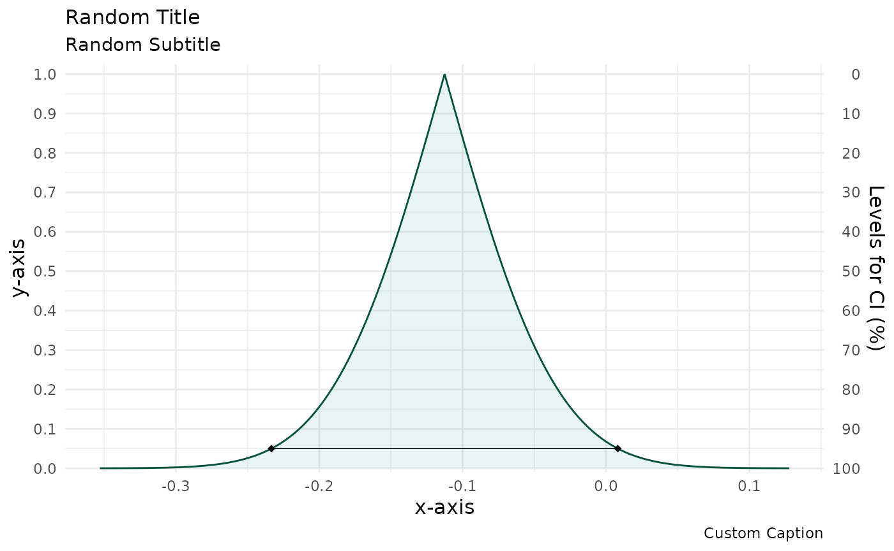
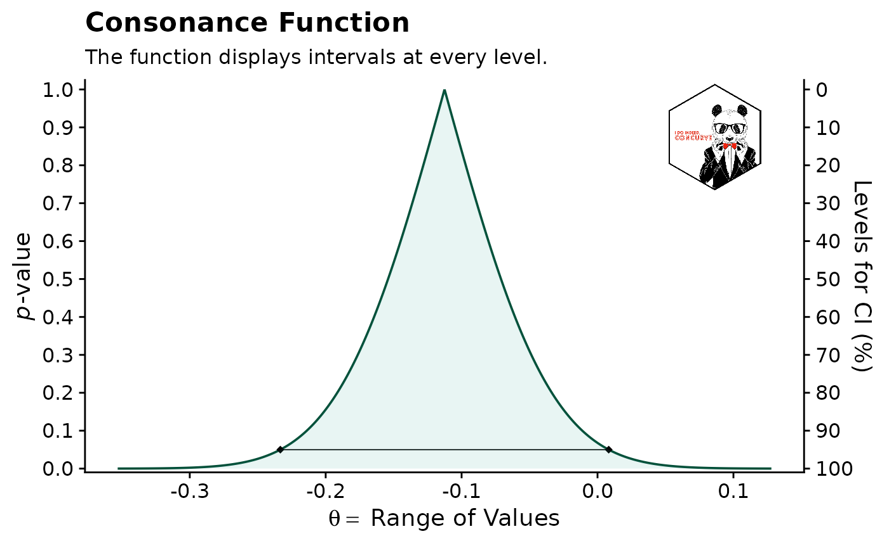
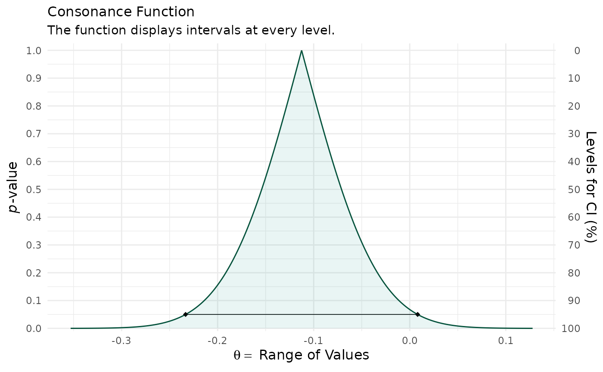
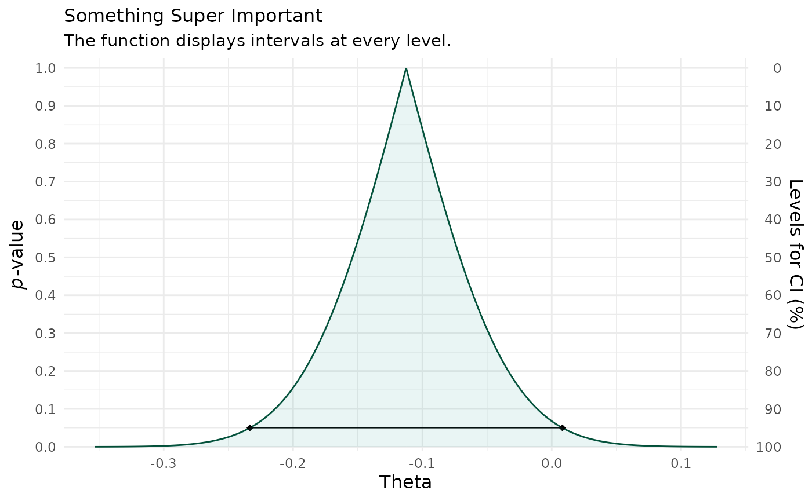
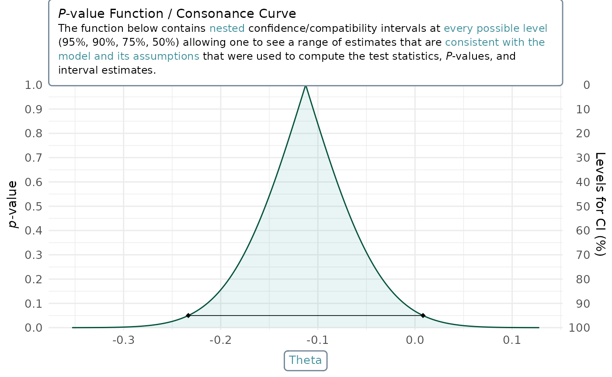

A Universal Grammar of Graphics
Because concurve graphs functions via
ggplot2, it is quite easy to customize parts of the plot
beyond some of the arguments that are provided in the
ggcurve() function. For example, we are able to provide
arguments to the function to give custom titles, subtitles, x-axes,
y-axes, fills, and colors. However, we could also do this using the
standard ggplot2 grammar. We’ll generate a quick graph to
show how.
library(concurve)
#> Please see the documentation on https://data.lesslikely.com/concurve/ or by typing `help(concurve)`
set.seed(1031)
GroupA <- rnorm(500)
GroupB <- rnorm(500)
RandomData <- data.frame(GroupA, GroupB)
intervalsdf <- curve_mean(GroupA, GroupB,
data = RandomData, method = "default"
)
(function1 <- ggcurve(data = intervalsdf[[1]], type = "c", nullvalue = TRUE))
#> Warning: Using `size` aesthetic for lines was deprecated in ggplot2 3.4.0.
#> ℹ Please use `linewidth` instead.
#> ℹ The deprecated feature was likely used in the concurve package.
#> Please report the issue at <https://github.com/zadrafi/concurve/issues>.
#> This warning is displayed once per session.
#> Call `lifecycle::last_lifecycle_warnings()` to see where this warning was
#> generated.
Those are some of the default options provided to
ggcurve(). We could provide ggcurve()
arguments for the title, subtitle, etc, but we could also do it like
so:
library(ggplot2)
function1 +
labs(
title = "Random Title",
subtitle = "Random Subtitle",
x = "x-axis",
y = "y-axis",
caption = "Custom Caption"
)
If we even wanted to provide a custom theme, we could do the following.
library(cowplot)
logo_file <- "https://res.cloudinary.com/less-likely/image/upload/v1575441662/Site/Logo2.jpg"
function1 <- function1 +
theme_cowplot()
function2 <- ggdraw(function1) +
draw_image(logo_file, x = 1, y = 1, hjust = 2, vjust = 1.75, width = 0.13, height = 0.2)
function2
I’ve only tried testing this with the cowplot package,
so I cannot say for sure that the functions won’t break when applied
with other themes.Wilke_2019?
More Advanced Customization
Although the above shows how flexible concurve’s
ggcurve() is due to the integration with the
ggplot2 framework, we can achieve much more with a newer
package called ggtext.wilkeGgtextImprovedText2020?
If we wanted to fully control how the labels and titles in our graphs
looked or insert textboxes with full control, we could easily do that
with ggtext.
Before we used cowplot, here’s what our plain function
looked like (after regenerating it from scratch)
(function1 <- ggcurve(data = intervalsdf[[1]], type = "c", nullvalue = TRUE))
Simple enough, eh?
Okay, but if we wanted to have more fine control over how the title and axes look, we could do that. Here’s how:
We take our existing object function and we specify all the usual options for the titles, axes, etc
(function1 <- ggcurve(data = intervalsdf[[1]], type = "c", nullvalue = TRUE, title = "Something Super Important", xaxis = "Theta"))
But now, instead of doing that above, we’ll use a different style to
control the size, form, and color of the text. We’ll load
ggtext and then specify the arguments.
library(ggtext)
function1 <- ggcurve(data = intervalsdf[[1]], type = "c", nullvalue = TRUE, title = "Something Super Important", xaxis = "<span style = 'color:#3f8f9b;'>Theta</span> ")
function1 +
labs(
title = "*P*-value Function / Consonance Curve<br><span style = 'font-size:9pt;'>
The function below contains <span style = 'color:#3f8f9b;'>nested</span> confidence/compatibility intervals at <span style = 'color:#3f8f9b;'>every possible level</span> (95%, 90%, 75%, 50%)
allowing one to see a range of estimates that are <span style = 'color:#3f8f9b;'>consistent with the model and its assumptions</span> that were used to compute
the test statistics, *P*-values, and interval estimates. </span>",
subtitle = NULL
) +
theme(
plot.title = element_textbox_simple(
size = 11, lineheight = 1.1,
linetype = 1, # turn on border
box.color = "#748696", # border color
fill = "white", # background fill color
r = grid::unit(3, "pt"),
padding = margin(8, 8, 8, 8), # padding around text inside the box
maxwidth = unit(8, "in"), # margin outside the box
),
axis.text = element_text(size = 10),
axis.title.y = element_text(size = 11),
axis.title.x = element_textbox_simple(
size = 10,
width = NULL,
padding = margin(4, 4, 4, 4),
margin = margin(4, 0, 0, 0),
linetype = 1,
r = grid::unit(3, "pt"),
box.color = "#748696", # border color
fill = "white", # background fill color
)
)
As you might have noticed above, we can control the size of the text, the color of it, whether it’s bolded, italicized, etc., and that’s partially because it uses markdown.
Saving Plots
The most common way useRs save plots is by going to the plots tab in
an IDE like RStudio and clicking “export” and then “save as image” or by
using ggsave(), however, cowplot has a
superior function with far better default options built into it known as
save_plot().
save_plot("function2.pdf", function2)Previously, it was quite difficult to save consonance functions as
.svg files or as .pdf files because there was so much information in the
graphs that R would often crash. However, this is no longer the case and
can easily be done with the svglite package. Once again, we
use the same command from above.
Cite R packages
Please remember to cite the packages that you use.
citation("concurve")
#> To cite package 'concurve' in publications use:
#>
#> Rafi Z, Vigotsky A (2026). _concurve: Computes and Plots
#> Compatibility (Confidence) Intervals, P-Values, S-Values, &
#> Likelihood Intervals to Form Consonance, Surprisal, & Likelihood
#> Functions_. R package version 3.0.0,
#> <https://CRAN.R-project.org/package=concurve>.
#>
#> Rafi Z, Greenland S (2020). "Semantic and Cognitive Tools to Aid
#> Statistical Science: Replace Confidence and Significance by
#> Compatibility and Surprise." _BMC Medical Research Methodology_,
#> *20*, 244. ISSN 1471-2288, doi:10.1186/s12874-020-01105-9
#> <https://doi.org/10.1186/s12874-020-01105-9>,
#> <https://doi.org/10.1186/s12874-020-01105-9>.
#>
#> To see these entries in BibTeX format, use 'print(<citation>,
#> bibtex=TRUE)', 'toBibtex(.)', or set
#> 'options(citation.bibtex.max=999)'.
citation("ggplot2")
#> To cite ggplot2 in publications, please use
#>
#> H. Wickham. ggplot2: Elegant Graphics for Data Analysis.
#> Springer-Verlag New York, 2016.
#>
#> A BibTeX entry for LaTeX users is
#>
#> @Book{,
#> author = {Hadley Wickham},
#> title = {ggplot2: Elegant Graphics for Data Analysis},
#> publisher = {Springer-Verlag New York},
#> year = {2016},
#> isbn = {978-3-319-24277-4},
#> url = {https://ggplot2.tidyverse.org},
#> }
citation("ggtext")
#> To cite package 'ggtext' in publications use:
#>
#> Wilke C, Wiernik B (2022). _ggtext: Improved Text Rendering Support
#> for 'ggplot2'_. doi:10.32614/CRAN.package.ggtext
#> <https://doi.org/10.32614/CRAN.package.ggtext>, R package version
#> 0.1.2, <https://CRAN.R-project.org/package=ggtext>.
#>
#> A BibTeX entry for LaTeX users is
#>
#> @Manual{,
#> title = {ggtext: Improved Text Rendering Support for 'ggplot2'},
#> author = {Claus O. Wilke and Brenton M. Wiernik},
#> year = {2022},
#> note = {R package version 0.1.2},
#> url = {https://CRAN.R-project.org/package=ggtext},
#> doi = {10.32614/CRAN.package.ggtext},
#> }
citation("cowplot")
#> To cite package 'cowplot' in publications use:
#>
#> Wilke C (2025). _cowplot: Streamlined Plot Theme and Plot Annotations
#> for 'ggplot2'_. doi:10.32614/CRAN.package.cowplot
#> <https://doi.org/10.32614/CRAN.package.cowplot>, R package version
#> 1.2.0, <https://CRAN.R-project.org/package=cowplot>.
#>
#> A BibTeX entry for LaTeX users is
#>
#> @Manual{,
#> title = {cowplot: Streamlined Plot Theme and Plot Annotations for 'ggplot2'},
#> author = {Claus O. Wilke},
#> year = {2025},
#> note = {R package version 1.2.0},
#> url = {https://CRAN.R-project.org/package=cowplot},
#> doi = {10.32614/CRAN.package.cowplot},
#> }